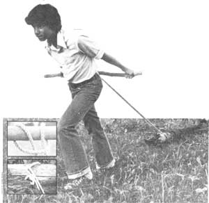

RIGHT: The author?s son contains his excitement as he demonstrates proper pulling form. Note that?to prevent slipping?the rope is placed several inches back from the end of the log. INSERT PHOTOS: Lark?s head knots secured around the hauling stick and a tree limb.